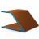

Linear sweep
 | Create single curved faces via linear sweeps. → |
Create single curved faces via the linear sweep of outer contours and island contours from curves and boundaries. Create the extruded faces with a Height  , optionally on Both sides
, optionally on Both sides  in both directions to the curve (no symmetry). With bases creates top and bottom faces, in case the selected curves and face boundaries result in a closed contour line
in both directions to the curve (no symmetry). With bases creates top and bottom faces, in case the selected curves and face boundaries result in a closed contour line  . Select an angle between 0° and 89°, such as a draft angle
. Select an angle between 0° and 89°, such as a draft angle  . It is possible to select island contours
. It is possible to select island contours  .
.
Solids Use the Solid option to collect the faces into a solid  .
.

Spatially curved curves may also be used.
This concerns the handling of penetration at filleted corners with inclined side faces. An edge is created from the penetration to replace the fillet.
Select
Curves: Select the curves and boundaries  . The number of selected entities is displayed.
. The number of selected entities is displayed.
Angle: Enter a draft angle .
Invert islands: Invert the angle value for island contours  .
.

Trim to
Faces: The extruded faces are trimmed to faces. The top and bottom faces that are created follow the shape of these faces. It must be possible to project the selected profile curve entirely onto these faces. However, entities of the Face - plane type are regarded as infinitely large. They always trim the sweep faces. Select the entities  . The number of entities is displayed.
. The number of entities is displayed.

Modes
Normal: Uses the normal vector of the curve or boundary. If the normal vector can be calculated, a preview is displayed.
If the normal vector cannot or should not be used, you must enter the Direction for the extrusion  .
.
Select  the direction by using an entity, specify it by using 2 points
the direction by using an entity, specify it by using 2 points  or selecting an axis direction of the current workplane (X Wp, Y Wp, Z Wp)
or selecting an axis direction of the current workplane (X Wp, Y Wp, Z Wp)  or enter the direction with a Vector
or enter the direction with a Vector  . The Invert
. The Invert  option inverts the direction.
option inverts the direction.

Transitions
If multiple faces are extruded via curves, you can control the transition between the faces.
Rounded: Creates rounded transitions  .
.
Sharp: Creates transitions with sharp edges  .
.